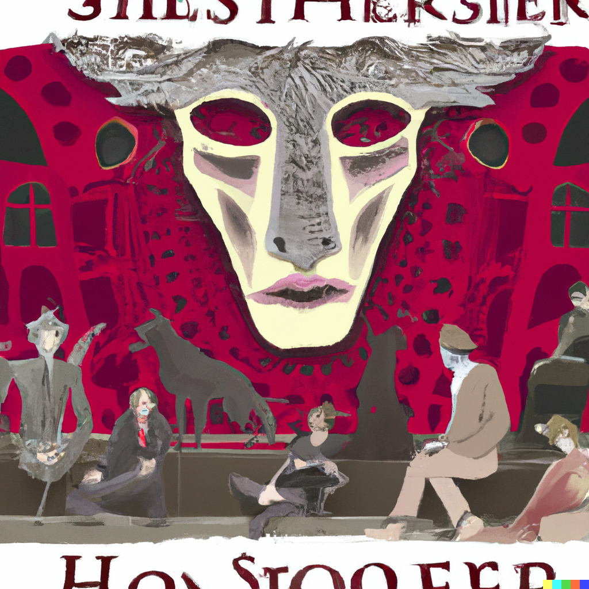

In Steppenwolf, Herman Hesse explores the inner conflict of the novel's protagonist, Harry Haller. As a Steppenwolf, a solitary wolf of the steppes, Harry feels alienated from the world around him and struggles to find a place where he belongs. The novel examines themes of individualism, spirituality, and the human condition.
As Harry struggles with his own identity, he meets a woman named Hermine who helps him to see the world in a new light. Hermine is a free-spirited and unconventional woman, and her unique perspective challenges Harry's rigid and cynical view of the world. Through their conversations and interactions, Harry begins to see the beauty and possibility in life, and he starts to let go of his self-imposed isolation.
In many ways, Hermine is the key to Harry's transformation. She helps him to open up to new experiences and to embrace the magic and mystery of the world around him. She also encourages him to explore his own inner world, and to confront the fears and doubts that have held him back.
At the same time, Harry's relationship with Hermine is not without its challenges. He is initially resistant to her influence, and he struggles to trust her and to let go of his old ways. And as he begins to open up to her, he also exposes himself to the risk of rejection and heartbreak.
Despite these challenges, however, Harry and Hermine's relationship is ultimately a positive and transformative one. Through her, Harry learns to embrace life and to find meaning and purpose in his existence. He also learns to accept himself and to let go of his self-imposed limitations. In the end, it is thanks to Hermine that Harry is able to transcend his own identity as a Steppenwolf and to find a place in the world where he belongs.
Despite its dark and sometimes difficult themes, Steppenwolf is ultimately a hopeful and inspiring novel. It reminds us that even in the midst of our own struggles, there is always the possibility of growth and transformation. I would recommend this novel to anyone who is interested in exploring the complexities of the human experience and the power of relationships to change and transform us.